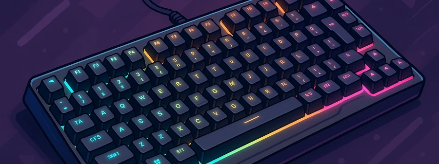

Mejores Ratones Gaming 2025 | Opiniones Reales | Actualizado Abril 2025
Carlos López
Editor Jefe
Hola, soy Carlos. Llevo más de 15 años trabajando como analista de productos tecnológicos, especializado en periféricos para gaming y productividad. A lo largo de mi trayectoria he probado cientos de ratones, y en este artículo quiero compartirte mis opiniones personales basadas en la experiencia real de uso, para que tomes la mejor decisión de compra.
Índice de Contenidos
- ¿Qué es un ratón gaming?
- ¿Por qué deberías comprar un ratón gaming?
- Comparativa de los mejores modelos
- ¿Cuál compraría yo?
- Preguntas frecuentes
¿Qué es un Ratón Gaming?
Un ratón gaming es una herramienta de precisión diseñada para ofrecer velocidad, respuesta y comodidad durante largas sesiones de juego. No es solo cuestión de diseño llamativo o luces RGB, sino de sensores avanzados, ergonomía optimizada y botones personalizables.
¿Por Qué Deberías Comprar uno?
- Alta precisión: sensores ópticos de última generación ofrecen seguimiento perfecto incluso en movimientos rápidos.
- Diseño ergonómico: comodidad garantizada en sesiones prolongadas.
- Botones programables: accesos directos personalizados para mejorar tu rendimiento.
- Durabilidad extrema: materiales resistentes para soportar años de uso intenso.
- Iluminación personalizable: un toque estético que complementa tu setup.